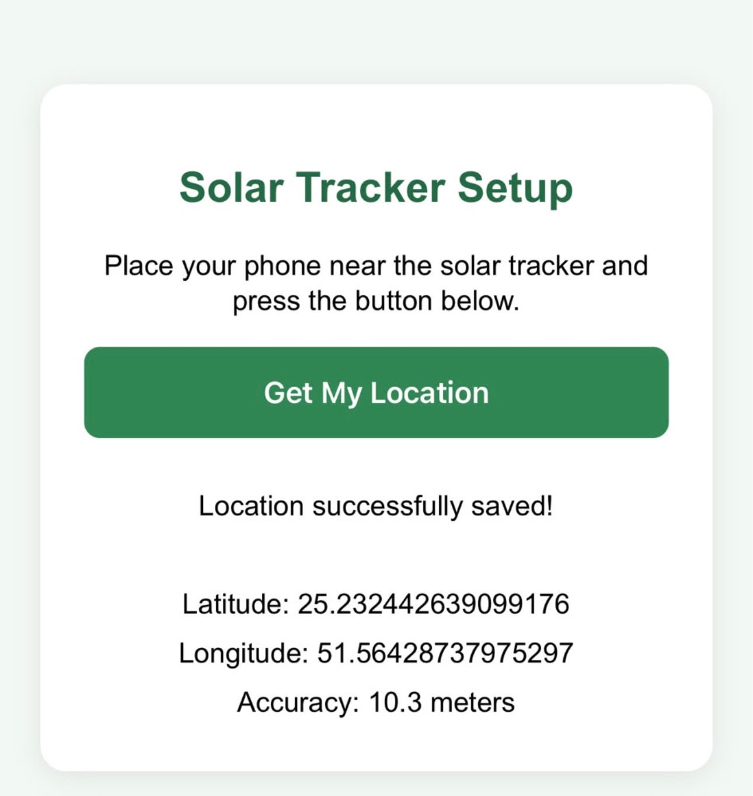
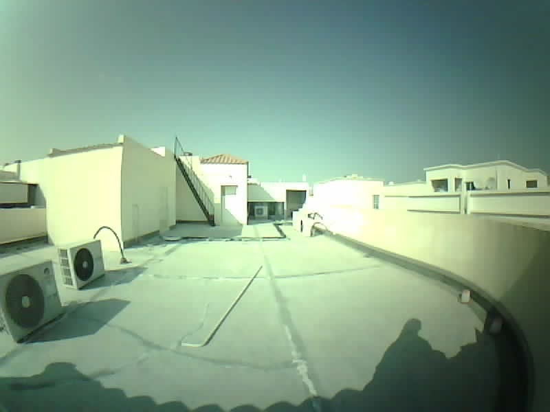

Video storyboard · v4 · final, with your 8 Nov answers
IoT-Based Residential Rooftop Solar Panel Placement Assessment
This version follows your 7-part outline and replaces the "slide" feel with one continuous camera move through a single 2D world. The camera never cuts. It follows the data: the photo leaves the camera and travels through every component into Python, and the sensor readings flow to the ESP32 and on to Blynk. A small data tray in the corner collects each result (location, shading, irradiance, environment) and empties into the final dashboard, so the ending ties the whole system together.
Duration75 s · 7 sections
Format1920 × 1080 · 16:9 · 30 fps
DeliveryMP4 (H.264), PowerPoint-ready
AudioNone (no narration / music)
1Device
2Get location
3Capture
4Image transfer
5Shading analysis
6Sensors & Blynk
7Final assessment
0 s8172335466075 s
The camera path: one world, one continuous move
Motion style
No hard cuts or fade-to-slide. Each section ends where the next one begins, and the camera pans or pushes between them.
Data is always a visible object: the photo, location pin and reading pills physically travel.
Only a small section tag (top left) and short labels next to objects. No full-screen titles between sections.
Accuracy
Only your own images, screenshots and outputs are used. The rooftop photo is the same file from capture through to shading.
No values are invented. Humidity, pressure and wind use the placeholder readings you agreed to.
Device, LilyGo, tower, ngrok and Flask are drawn as simple icons in your palette.
How to review
Each section page shows keyframes A → B → C. Refer to them by code, e.g. "4B: slower".
Amber notes mark what we still need from you. They never appear in the video.
Palette as specified:
TutorBin
01
Device Introduction
Tag: 1 · The device0:00 – 0:08
1A0.0 – 1.5 s
IoT-Based Residential
Rooftop Solar Assessment
Opens straight on your complete setup, dimmed, with the project title. The title lifts away as the image brightens. No illustrated rooftop: the real device is the first thing seen.
1B1.5 – 6.5 s
Battery + fan12 V DC power
1The device
The camera glides left to right along the setup. A spotlight stops on each part for ~1 s and our own label pops up beside it: 1 electronics enclosure, 2 solar tracker + sensor head, 3 battery + fan (shown), 4 wind sensor, 5 solar panel.
1C6.5 – 8.0 s
1The device
The spotlight releases and the camera keeps panning right, past the solar panel. A phone showing your website slides into the same world, so section 2 begins without a cut.
Motion
0–1.5 s: title over the dimmed render; the dim fades out and the camera starts a slow drift.
1.5–6.5 s: one smooth left-to-right pan. The spotlight slides between the five stops along the dotted path (eased, never jumping).
6.5–8 s: pan continues right; the phone enters from the right edge with a slight parallax.
Hand-off: the pan never stops; the device stays at the left edge of the next shot so the audience knows the phone belongs to the same system.
Notes
Uses your new clean render. All labels are ours, drawn in the palette, so they can animate in and out with the spotlight.
Part names follow your labelled render (01_device/device_render_labelled.webp).
TutorBin
02
Get Location (Website)
Tag: 2 · Get location0:08 – 0:17
2A8 – 10.5 s

2Get location
The camera settles on the phone (the panel edge of the device is still visible at left). The result area is empty; a cursor glides to Get My Location.
2B10.5 – 13.5 s
2Get location
Click: the button dips with a ripple, a short spinner, then "Location successfully saved!" and the latitude, longitude and accuracy type in line by line (latitude mid-typing shown).
2C13.5 – 17 s
Site location
25.23° N, 51.56° E
± 10.3 m · saved
Location
Shading
Irradiance
Environment
2Get location
The phone slides left and a location card pops out with a "saved" tick. The card folds into a pin token that drops into the new data tray (first slot fills). The camera then pans back left towards the device.
Motion
Cursor eases to the button; press scale 0.97 + ripple.
Spinner ~0.8 s; result lines type in one after another.
Card springs out; after a beat it shrinks into the pin and arcs into the tray.
The tray stays on screen for the rest of the video, filling as each result is produced.
Assets used
Website screenshot (your real capture). Our own graphics show the coordinates rounded: 25.23° N, 51.56° E
Hand-off: the camera whip-pans back left along the same world and pushes into the sensor head on the tracker.
Notes
The phone is shown as the source of the location, so no GPS module appears on the device.
Coordinates are rounded to 25.23° N, 51.56° E, as agreed.
TutorBin
03
Image Capture (ESP32-CAM)
Tag: 3 · Capture rooftop image0:17 – 0:23
3A17 – 19 s
ESP32-CAMtracker sensor head
Location
Shading
Irradiance
Environment
3Capture rooftop image
The camera arrives on the sensor head and pushes into the ESP32-CAM lens. Viewfinder brackets close in around the lens; a small red "recording" dot blinks.
3B19 – 19.6 s
Location
Shading
Irradiance
Environment
3Capture rooftop image
Flash: a white burst and rays from the lens, with a 3-frame white-out of the whole screen, like a camera shutter.
3C19.6 – 23 s

img_01.jpg
Location
Shading
Irradiance
Environment
3Capture rooftop image
The captured photo pops out of the lens as a small print, spins slightly and settles beside the device as a thumbnail. It is your real rooftop image.
Motion
Push-in from the whip-pan lands on the lens (no cut).
Brackets snap in (0.3 s), short hold, then the flash (0.6 s).
Photo scales up from the lens along an arc with a soft overshoot and settles; the camera pulls back slightly.
Hand-off: the photo does not disappear. It shrinks and flies over a wireless link towards the electronics enclosure, and the camera follows it into section 4.
Notes
One capture is shown, as in your outline. The tracker's repositioning is not shown, to keep this section short.
TutorBin
04
Image Transfer: the camera follows the photo
Tag: 4 · Sending the image0:23 – 0:35
4A23 – 26 s
Wireless linkESP32-CAM → LilyGo
Inside the electronics enclosure: main board
LilyGo (ESP32 + SIM)
Camera›LilyGo›Cellular›ngrok›Flask›Desktop
4Sending the image
Radio rings pulse from the camera and the photo flies wirelessly to the enclosure. A magnifier "x-ray" opens on the LilyGo board (ESP32 + SIM); the rings land on it, the photo is pulled in and the SIM chip lights up.
4B26 – 31.5 s
Flask
LilyGoSIM · cellular
Cellular network
Public tunnel
Serverreceives & saves
Camera›LilyGo›Cellular›ngrok›Flask›Desktop
4Sending the image
The camera pans right with the photo, like a tracking shot. It rides the radio waves from the LilyGo antenna up the cell tower, passes through the ngrok tunnel (shown), and is caught by the Flask server. Faint copies trail behind to show speed.
4C31.5 – 35 s
Received_Images
img_01.jpg
Saved to desktop
Python
Camera›LilyGo›Cellular›ngrok›Flask›Desktop
4Sending the image
From Flask, the photo flies into a desktop monitor and drops into the Received_Images folder as img_01.jpg ("Saved" tick). A Python window slides in from the right, and the file is dragged straight into it.
Motion
One continuous rightward tracking shot; the photo stays roughly centre-screen while the world moves past it.
Each component pulses as the photo passes through it, and its step lights up in the route bar at the bottom.
Short pause inside the ngrok tunnel (photo disappears in, reappears out) so "forwarding" reads clearly.
The folder icon bounces when the file lands.
Assets used
Clean device render (tracker + enclosure)
Rooftop photo (the same file throughout)
Route and folder name from your transmission diagram (reference only)
Hand-off: the camera follows the file into the Python window, which grows to fill the screen for section 5.
Notes
As you confirmed, the camera sends the image to the LilyGo wirelessly. The LilyGo then sends it over the cellular network.
LilyGo, ngrok and Flask are drawn as simple icons with their names, not official logos.
TutorBin
05
Shading Analysis (Python)
Tag: 5 · Shading analysis0:35 – 0:46
5A35 – 37.5 s
Python · shading analysis● running
Load image
Detect roof floor
Detect shaded areas
5Shading analysis
The Python window fills the screen. The photo drops into the image viewer; a checklist on the left ticks off Load image. It is the same photo that just travelled through the system.
5B37.5 – 41.5 s
Python · shading analysis● running
Load image
Detect roof floor
Detect shaded areas
Roof floor: 34% of image
5Shading analysis
A glowing scan line sweeps across the photo. Behind it, the roof floor turns green (your processed image), with a pixel shimmer at the edge. The 34% figure counts up from 0 once the scan finishes.
5C41.5 – 46 s
Python · shading analysis✓ complete
Load image
Detect roof floor
Detect shaded areas
Shaded Areas Detected
Location
Shading
Irradiance
Environment
5Shading analysis
A second pass: the green fades out while the orange shadows grow in from the objects that cast them, labelled "Shaded Areas Detected". All three steps are ticked. A copy of the result shrinks into the Shading slot of the tray.
Motion
The image never swaps or cuts. Each stage is revealed on top of the same photo (scan-line wipe, then a mask grow), so it looks like the software is transforming it.
Checklist steps tick in sync with each stage.
Hold on the final orange result for ~1.5 s so it can be read.
Assets used
05_shading/stage1_original.jpg
05_shading/stage2_roof_floor_green.jpg (cropped to the photo; its own title text is removed and redrawn as the pill)
05_shading/stage3_assessment_orange.jpg
Hand-off: the camera pulls back out of the monitor and pans left across the world, back to the device, for section 6.
Notes
All three images line up exactly (same 4:3 frame), so the stages blend on the spot.
Orange regions are the shadows, labelled "Shaded Areas Detected" as agreed.
TutorBin
06
Integrated Sensors & Blynk
Tag: 6 · Sensors & live monitoring0:46 – 1:00
6A46 – 50 s
Pyranometersolar irradiance
Wind sensorwind speed
BME280temp · humidity · pressure
MLX90640thermal pattern
RTCtimestamp · inside
Location
Shading
Irradiance
Environment
6Sensors & live monitoring
Back on the device, everything else dims. The five sensors light up one after another, each with its own label: pyranometer (top of the tracker head), wind sensor, then BME280 and MLX90640 (on the enclosure front) and RTC (inside).
6B50 – 55 s
Irradiance · W/m²
Thermal · °C
Wind · m/s
Temp · Humidity · Pressure
Timestamp
ESP32 collects every reading
Location
Shading
Irradiance
Environment
6Sensors & live monitoring
Each sensor emits data pills that travel along the wiring to the ESP32 inside the enclosure, which pulses as each one arrives. The RTC stamps the readings with the time.
6C55 – 60 s
W/m²
°C
°C
Blynk
Irradiance
25.00 W/m²
Ambient
50.47 °C
Thermal avg
27.41 °C
Thermal max
30.48 °C
Humidity
21.4 %
Pressure
1014.8 hPa
Wind
3.6 m/s
RTC time-stamp
LilyGo SIM
Cellular network
Location
Shading
Irradiance
Environment
6Sensors & live monitoring
The camera follows the readings out of the antenna, over the cellular network, onto the Blynk dashboard. Each tile counts up to its reading: your real 25.00 W/m², 50.47 °C and 27.41 / 30.48 °C, plus placeholder humidity, pressure and wind. The Irradiance and Environment slots in the tray fill.
Motion
Whip-pan from the desktop back to the device; sensors light up in sequence (~0.6 s each).
Pills move along curved paths at different speeds so the flow feels live; the ESP32 ring pulses on arrival.
Camera follows the pills out of the antenna; the same tower from section 4 reappears, so the route is recognisable.
Assets used
Clean device render; sensor positions from your labelled render
Blynk values: Live Data from your dashboard recording, plus agreed placeholders (06_sensors_blynk/blynk_values.json)
Hand-off: the four filled tray tokens lift off and fly to the centre of the screen. Section 7 starts from them.
Notes
Placeholder readings, as agreed: humidity 21.4 %, pressure 1014.8 hPa, wind 3.6 m/s. The wind sensor stays in the animation.
TutorBin
07
Final Assessment: everything comes together
Tag: 7 · Final assessment1:00 – 1:15
7A60 – 64 s
Location
25.23° N, 51.56° E
Shading analysis
Irradiance
pyranometer · W/m²
Environment
temp · humidity · pressure wind · thermal
Assessment software
7Final assessment
The four tray tokens fly out and open into cards: location, shading result, irradiance, environmental data. Each one streams into a central core that represents your assessment software, which spins up as the data arrives.
7B64 – 71 s
Solar Placement Assessment
Estimated annual energy by panel · kWh / year
Bars rise in three steps: capacity, with shade, with shade + dust. Your pick is highlighted: LONGi X10 485 bifacial · 10,354 kWh / year
The core bursts open into your dashboard. Your energy chart builds bar by bar (capacity, shade, dust), followed by the recommended panel and placement, then the cost, payback and ROI, with every figure counting up. A small line marks them as estimates.
7C71 – 75 s
IoT-Based Residential Rooftop Solar Panel Placement Assessment
The camera pulls back one last time so the device and the finished report sit side by side, linked by the route. The project title fades up; hold on the final frame.
Motion
Tokens arc in from the tray (staggered 0.2 s), open into cards, then stream into the core.
Core expands into the dashboard (a scale-up, no cut); the chart reveals bottom-up, one series at a time; cards stack in below.
Final pull-back; title fades up; hold ~2 s to end.
Assets used
Dashboard recording / frames
Energy chart: 07_dashboard_report/energy_by_panel_chart.jpg